Simple and Easy Recipes
Palak Paneer
© 2016 Spicy World, Published on: Feb 15, 2016
'Palak paneer' is a famous north indian dish. This is a hit item for spinach lovers. After adding heavy cream the texture will make you greedy. Palak paneer's smooth, rich and velvety gravy is beyond everything. It goes very well with butter naan. It's a no onion and no garlic recipe

Ingredients
- Fresh paneer.
- A bunch of fresh spinach leaves.
- 1 tomato.
- Some nuts / cashews.
- 1 inch ginger.
- 2-3 green chilies.
- Whole spices ( Half Teaspoon of cumin seeds, 3 cloves, 1 small cinnamon stick).
- Salt and sugar.
- Spice powder ( turmeric powder half Teaspoon, coriander powder 1 Teaspoon, cumin powder 1 Teaspoon, red chili powder half Teaspoon, besan 1 tsp, garam masala 1 tsp ).
- Dry fenugreek leaves half Teaspoon.
- 3 Tablespoons of heavy cream.
- Water.
- 2 Tablespoons of white oil.
- 2 Teaspoons of butter.

Steps
Cut the paneer into cubes or triangle or any shape of your choice.
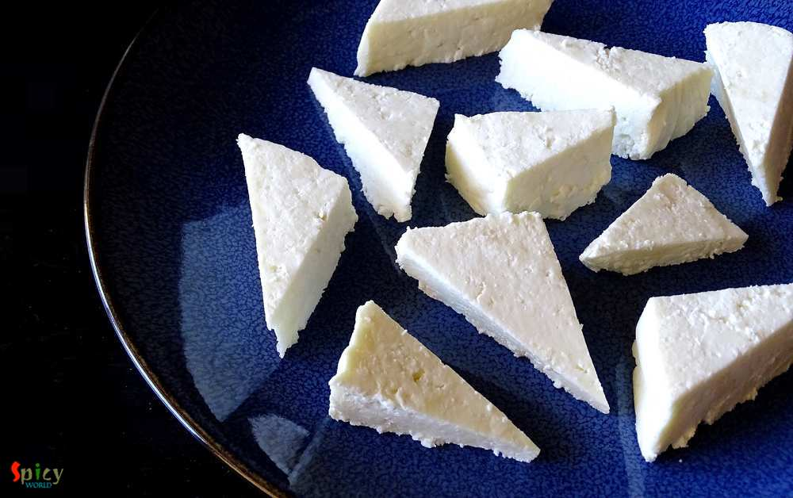
Now heat a Teaspoon of oil and fry the paneer pieces for 2-3 minutes.
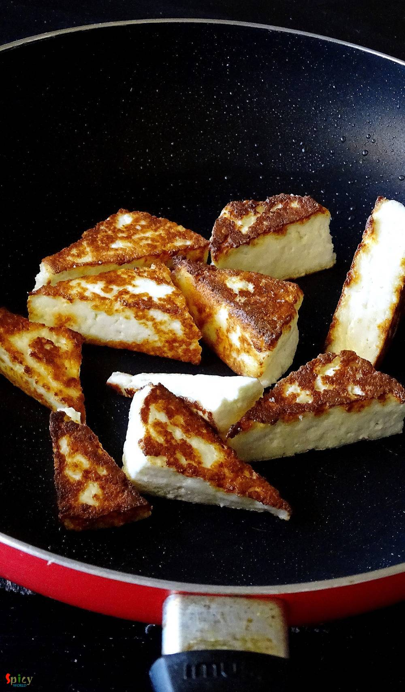
Then soak them in a bowl of cold water.
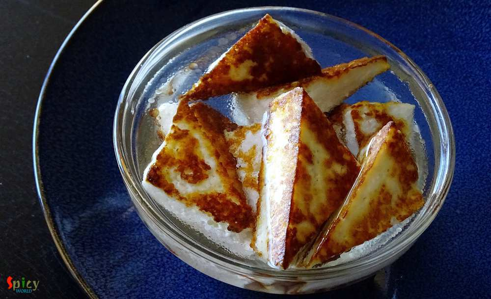
Boil 2 glass of water in a saucepan.
Add the nuts / cashews and tomato in boiling water. Boil them for 2 minutes.
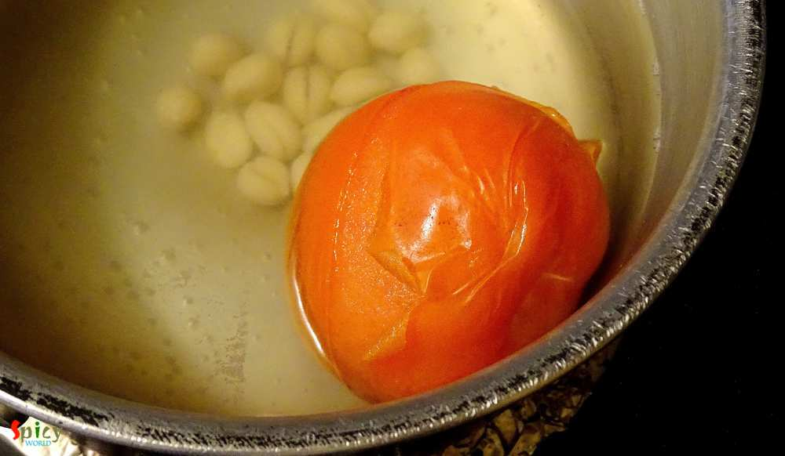
Then drain the water and peel the skin of tomato.
Put ginger, green chilies, boiled nuts and peeled tomato in a blender. Make a smooth paste ou of them.
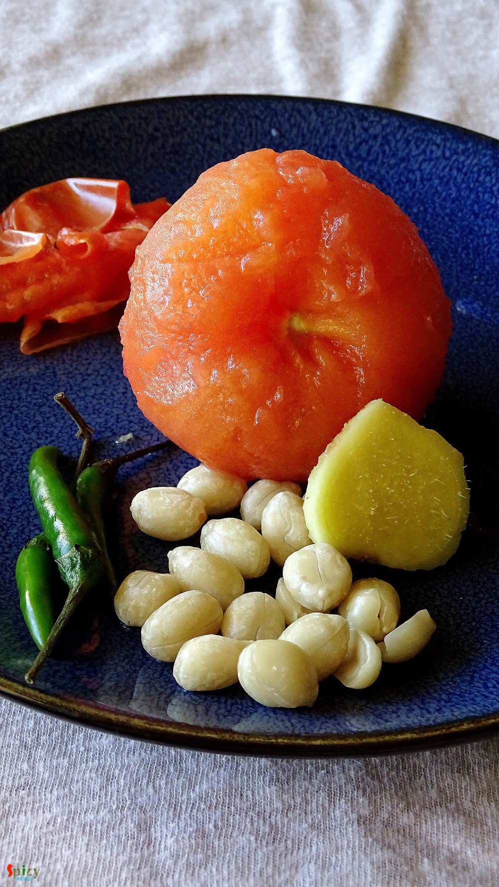
Now wash the spinach leaves with water very well.
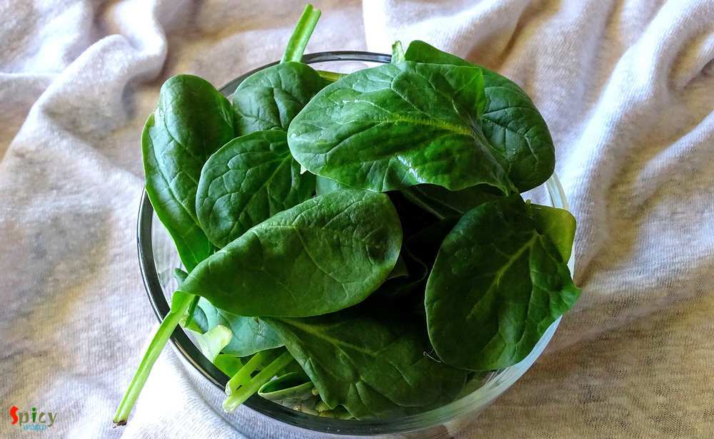
Then make another paste of only spinach leaves and 2 to 3 Tablespoons of water.
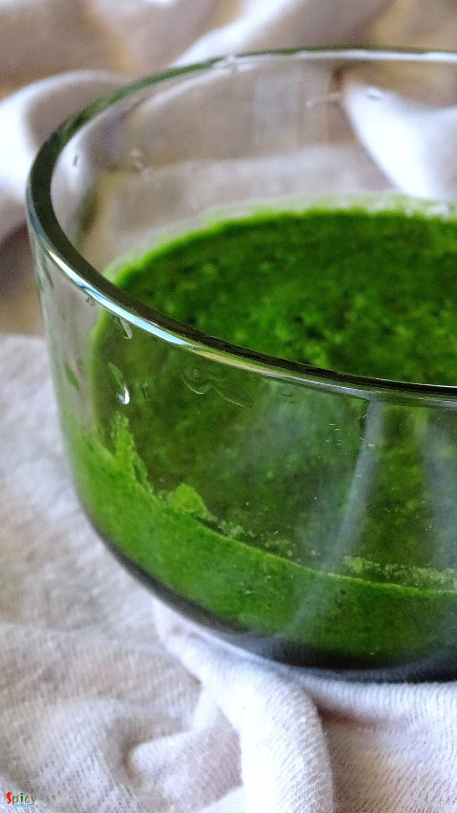
Heat oil and butter in a pan.
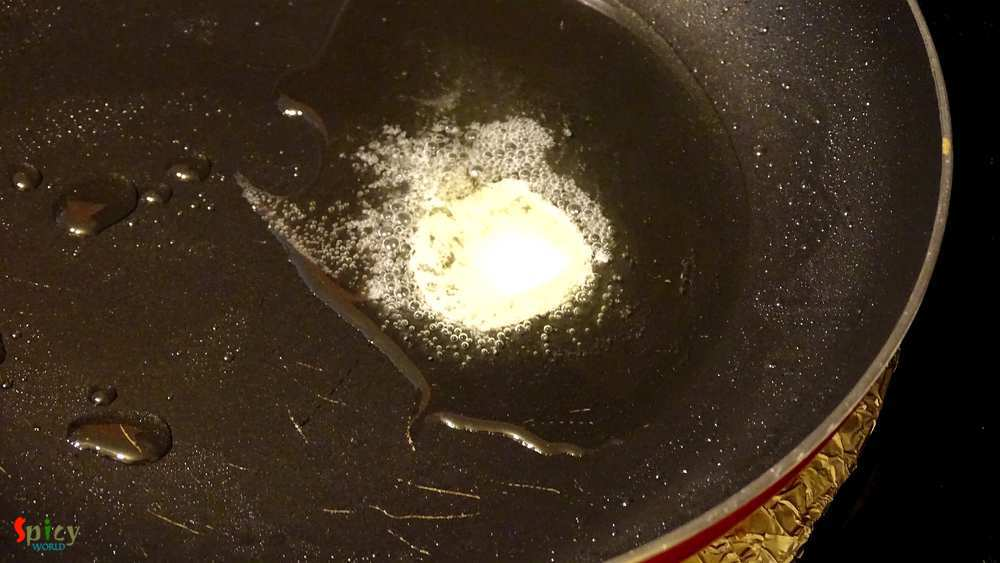
After melting the butter, add cumin seeds, cloves and cinnamon stick.
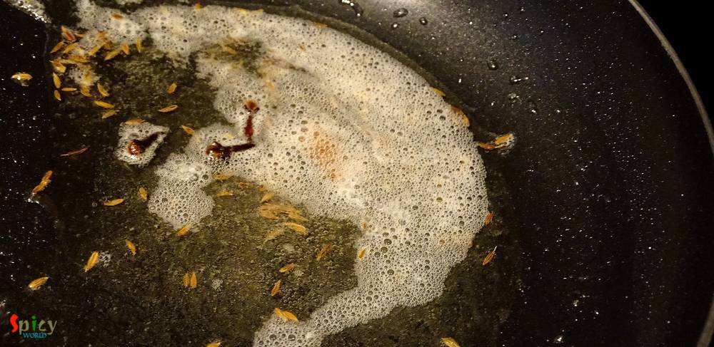
Then add all the above mentioned spice powder in the hot oil. Saute for a minute.
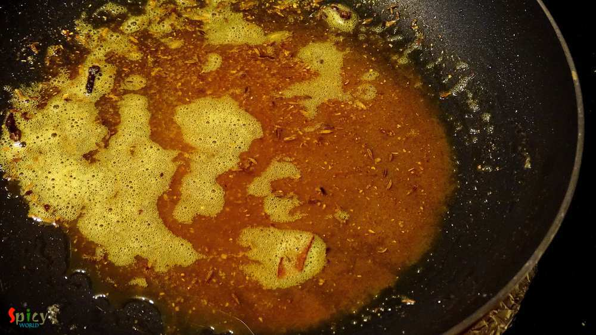
Then add the tomato paste , salt and 2 Teaspoons of sugar. Cook it for 15 minutes in medium flame.
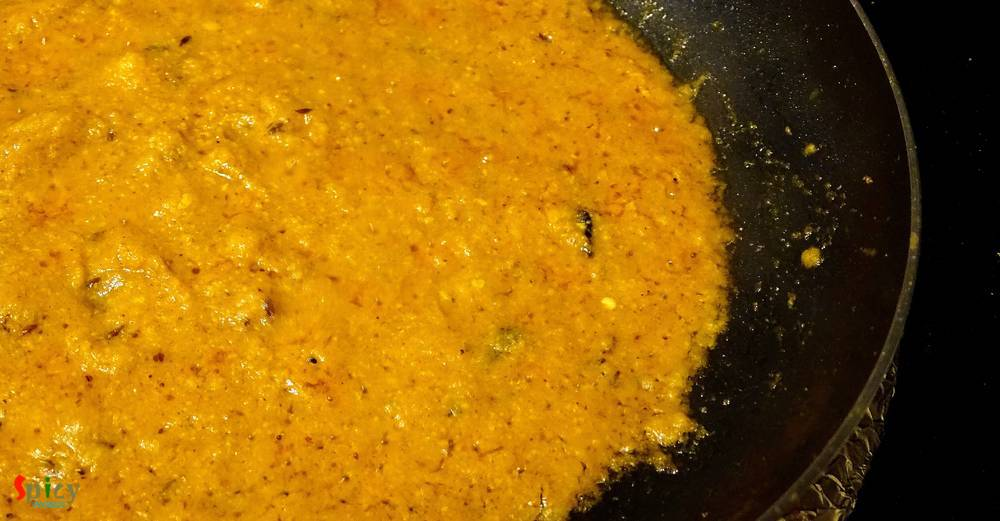
When oil starts separating add spinach paste. Cook it for another 10 minutes without cover in slow flame.
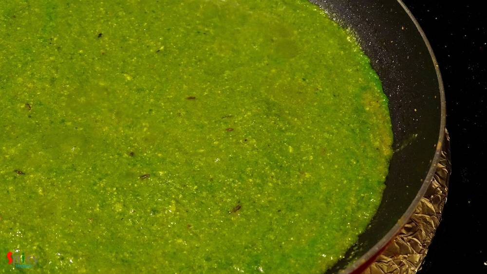
Then add some water for gravy. Cook it for 2 minutes.
After that add heavy cream and dry fenugreek leaves (kasoori methi). Mix it for 2 minutes.
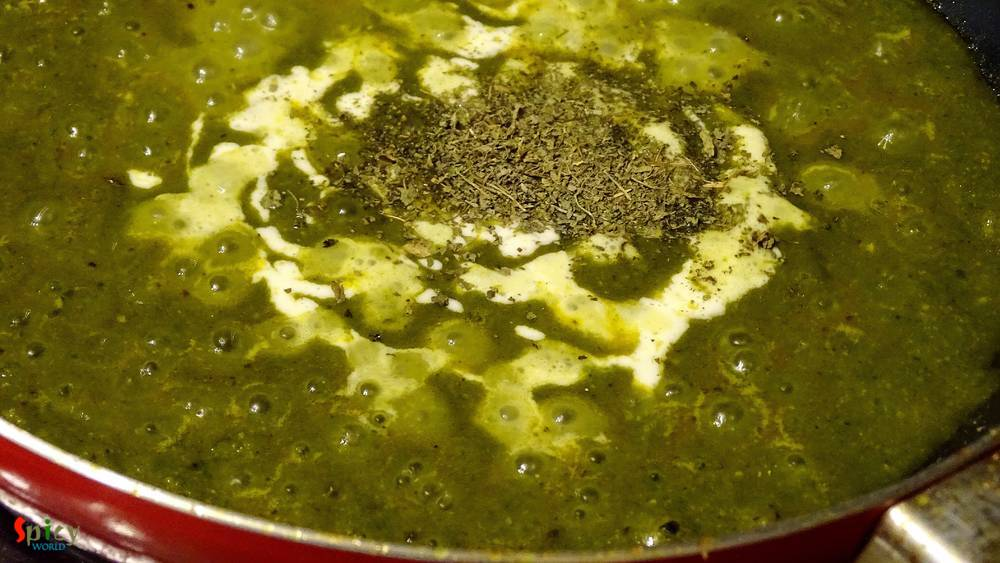
Lastly add fried and soaked paneer pieces. Cook for 2-3 minutes and then turn off the heat.
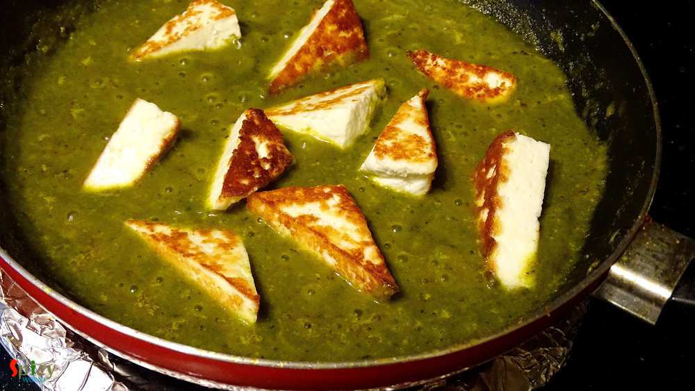
Let it rest for 2 minutes, then serve.
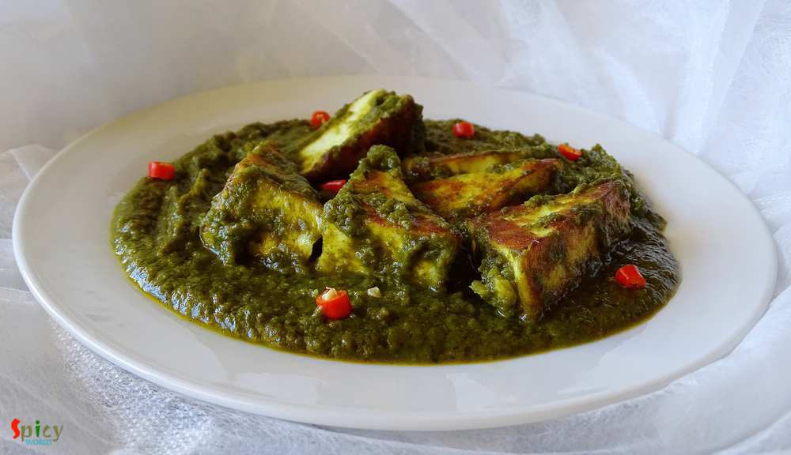
Your Palak paneer is ready.
Serve hot with roti, naan, paratha, kulcha.
")